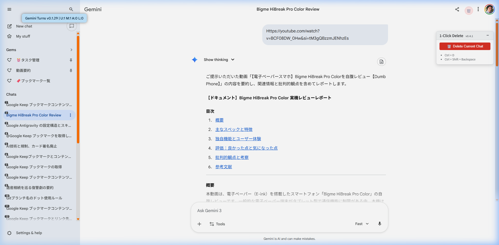
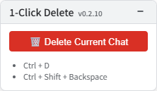

Gemini 1-Click Delete Conversation
GeminiのWeb SPAページにおいて、現在の会話を削除するための複数回のクリック操作を自動化し、1クリック または キーボードショートカット で即座に会話を削除できる機能を追加するユーザースクリプトです。
最新バージョン: 読み込み中...
最終更新日: 読み込み中...
スクリプトをインストール
最終更新日: 読み込み中...
UI プレビュー
1-Click Delete ボタン（ヘッダー内）とフローティングパネル

パネルの状態（通常・最小化）

目的
Geminiの標準機能では、会話を削除するために「メニューを開く → 削除を選択 → 確認ダイアログ」という手順が必要です。本スクリプトはこれらを自動化し、大幅に手間を削減します。
ユーザースクリプト情報
- Namespace:
https://userscript.moukaeritai.work/ - Match URL:
https://gemini.google.com/*（スクリプト内部でURLを監視し、チャットページでのみ動的に有効化されます。現在、/app/および/gem/のパス形式に対応しています。）
機能仕様
1. 1クリック削除ボタンの注入
以下の場所に「ゴミ箱」アイコンの削除ボタンを自動的に追加します。
- 標準ビュー（デスクトップ/モバイル共通）: 画面上部（ヘッダー部分）にある「・・・（オプション）」メニューボタンの隣に配置されます。
- 検索結果ビュー（またはヘッダーがない場合）: 画面右上に「フローティングボタン」として配置されます。現在表示中の会話IDを検知し、サイドバー内の対応する削除メニューを自動操作します。
2. 他のユーザースクリプトとの連携 (API)
- カスタムイベント:
windowオブジェクトに対してgemini-one-click-delete:request-deleteイベントを送信することで、外部から会話の削除を要求できます。 - ユースケース:
Gemini 1-Click Export to DocsやGemini Artifact Exporterなどのエクスポート完了後に、自動的に会話をクリーンアップする用途で使用されます。
3. キーボードショートカット
- ショートカット:
Ctrl + D（Macの場合はMeta + Dも可）、またはCtrl + Shift + Backspace - 動作:
- ショートカットキーが押されると、画面上の削除ボタンをプログラム的にクリックします。
- 安全性: テキスト入力エリア（
input,textarea,contenteditable）での入力中はショートカットを無効化します。
4. SPA（シングルページアプリケーション）対応とパフォーマンス
- GeminiはSPAであるため、ページ遷移を検知してスクリプトの機能を動的に制御します。
- 有効化: チャットページに遷移した際、削除ボタンやショートカット機能が自動的に有効になります。
- 無効化（クリーンアップ）: チャットページから他のページ（ホームページなど）に移動すると、追加したボタンや機能はすべて削除され、リソースを解放します。
注意事項
- Trusted Types 対応: ブラウザのセキュリティポリシーによるエラーを回避するため、内部的にTrusted Typesに対応しています。
- 待機ロジック: メニューパネルや確認ダイアログの表示を動的かつ堅牢に待機します。
更新履歴
- v0.2.10: 外部スクリプトからの削除要求を受け付けるカスタムイベント
(
gemini-one-click-delete:request-delete) に対応。 - v0.2.5: 画面上にフローティングパネルを追加し、ショートカットキーの視認性と操作性を向上。
- v0.2.4: アーティファクトがある際にメニュー項目が増えても「Delete」を正確に特定できるようロジックを強化。
- v0.2.3: 最新のGemini UIセレクタに対応。SPAルーティング検知に Navigation API を導入。
- v0.1.18: SPA対応強化に伴う内部変更。